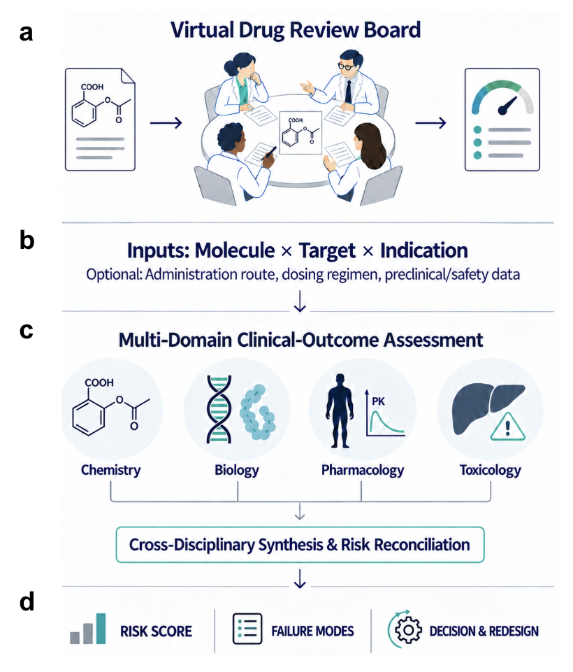

A Group of Specialists, One Room, and No Anchoring
Post 2 of 8 on SAISHO’s clinical-outcomes prediction model.
The last post ended on a claim I now owe you the substance of: that the way through a sparse label set is to reason well over it rather than to train on it. This post is what that looks like in practice.

The Model Is a Committee, Not a Classifier
Real drug programs are killed by committees. A development candidate gets reviewed by people who do not share a discipline and who are looking for different things: a medicinal chemist looking at metabolic soft spots, a biologist asking whether the target is causal, a clinical pharmacologist asking whether a tolerable dose produces meaningful exposure at the site of action, a toxicologist asking what happens at ten times that dose for six months.
That structure exists because no single expert has all four judgments, and because the failure modes are not commensurable. You cannot average them into a score in your head.
SAISHO copies the structure literally. Four domain agents, one per discipline, each producing its own phase-by-phase assessment and its own verdict on the same program. Then a reconciliation step that reads all four and resolves them.
I want to be precise about what is and is not novel here. Multi-agent deliberation improving over single-model generation is an established result; Du and colleagues showed it for factuality, and the ReConcile work showed it for round-table reasoning. The contribution is not the observation that agents help. It is the specific decomposition, the grounding, and the fact that we measured what it is worth on a real decision with real outcomes attached.
Three Inputs
The required inputs are the molecular structure as SMILES, the biological target or mechanism of action, and the therapeutic indication.
This is a constraint, not a convenience. Every additional input you require moves the assessment later in the development timeline, and the value of a risk assessment decays fast as the decisions it would inform become irreversible. Structure, target, and indication all exist by the time you have a lead series. Protocols, biomarker strategies, and Phase 1 PK do not.
Optional inputs are accepted where they exist: administration route, dosing regimen, emerging preclinical or safety data. They sharpen the assessment rather than enabling it. The route input in particular turns out to matter a great deal, which is post 7.
The Design Decisions I Would Defend Hardest
Independence before reconciliation. The four assessments run in parallel on identical inputs, and findings are withheld across domains until each one is finalized. No agent sees another's work while forming a view.
This is the single design choice I would fight for. The moment one confident opinion arrives before the others, you get anchoring, and in a system whose whole job is to surface disagreement, anchoring is fatal. A chemistry agent that has already read "toxicology sees no concerns" will find fewer concerns. The value of the architecture lives entirely in the fact that four views are formed on the same evidence without contaminating each other.
Disagreement is the signal. The reconciliation step is not an average and it is not a vote. It is a pass that reads four advisories, finds the contradictions, and resolves them against the program context. A molecule that all four agents like for four different reasons is a genuinely different object from one that scores well because three agents had nothing to say.
Context resolves trade-offs, structure does not. This is where the reconciliation earns its place. Consider an electrophilic acrylamide warhead. Chemistry flags it. Whether that flag matters depends on treatment duration, alternative therapy, and how much the indication tolerates. Only a pass that sees the toxicology view and the disease context together can decide. A chemistry filter cannot, and neither can a scalar.
No outcome labels in the design loop. Historical clinical outcomes were not used in SAISHO-specific prompt construction or orchestration design. The knowledge in the system comes from over a year of structured distillation sessions with human domain specialists, and the workflow is organized around mechanism (structure, target pharmacology, tissue exposure, organ-level toxicity pathways, disease biology) rather than around what historically worked. The system also calls out to predictive tooling during evaluation where it helps, including protein-ligand co-folding, QSAR, and ADME-Tox.
This matters for the same reason preregistration matters. If you tune the reasoning against the benchmark, the benchmark stops being a test.
What Comes Out
Three things, and the score is the least interesting of them.
The Clinical Risk Score is a 0 to 100 value where higher means riskier, reported alongside phase-specific success estimates and the four domain-level verdicts.
The ranked liabilities are the part that makes it actionable. Each mechanistic risk signal comes with a program-specific narrative rationale, and critically, with a measure of how often that signal recurred across repeated evaluations. A flag reading "hepatotoxicity (39/100)" means hepatotoxicity was the primary liability in 39 of 100 independent runs. That is uncertainty in the mechanistic attribution, and it is information the aggregate score cannot carry.
The intervention level is the part I did not expect to matter as much as it does. Risks are sorted by what it would take to fix them. Molecule-level risks, like CYP3A4-mediated clearance that bioisosteric replacement might address, are a chemistry problem. Program-level risks, like pathway redundancy, are not fixable by chemistry at all and call for a different indication, a different mechanism, or a different strategy entirely.
That distinction is the difference between a score and a decision. Two drugs can be equally risky and require completely opposite responses. Post 5 has the two case studies that make this concrete.
The Obvious Objection
The objection I get most is that this is orchestration theatre. Frontier models are extremely capable. If you hand one a structure, a target, and an indication, surely it can just tell you.
It is the right objection, and the honest answer is that it has to be measured rather than argued. Every agent in the board runs on the same underlying frontier models we benchmark against, so any gain cannot be attributed to a better model. It is attributable to the decomposition, the grounding, the tool access, the additional inference-time computation, and the reconciliation, as a package. Isolating which of those components contributes what still requires targeted ablations we have not run.
We did run the package-level comparison, and it is post 6.
Next week: does the score actually separate approved drugs from failed ones.
More on the platform at saisho.ai.